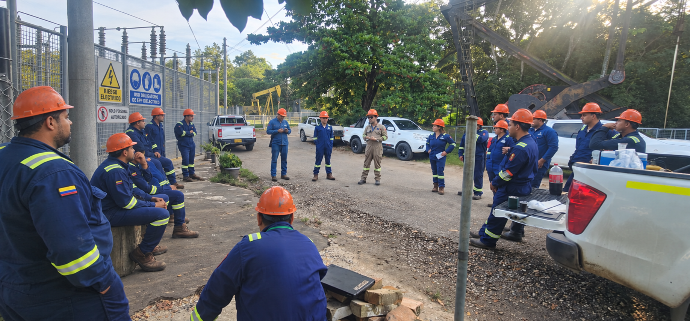

SUPERVISIÓN EN CAMPO • MANTENIMIENTO INDUSTRIALBAJA • MEDIA • ALTA TENSIÓN
INGENIERÍA · XMXM Consultando datos publicados…PETRÓLEO Consultando referencia COP/barril…LUGAR Autorizar ubicaciónTEMPERATURA —HUMEDAD RELATIVA —VIENTO —RACHAS —DIRECCIÓN —ALTITUD DEL TERRENO —PRESIÓN AL NIVEL DEL MAR —NUBOSIDAD —PRECIPITACIÓN PRÓX. 1 H —PRONÓSTICO MET —
CONDICIONES LOCALES
¿Desea compartir su ubicación para consultar el clima?
Con su autorización, el navegador solicitará su ubicación. Se enviarán coordenadas aproximadas a MET Norway y BigDataCloud para mostrar lugar, altitud del terreno, temperatura, humedad, viento y otras condiciones del pronóstico.
Fuentes: MET Norway y BigDataCloud. Las coordenadas se usan durante esta sesión y no se guardan en el sitio. Puede consultar los datos de XM sin compartir ubicación. El pronóstico no sustituye mediciones de campo.
FUENTES PÚBLICAS · DATOS PUBLICADOS
Indicadores técnicos del sistema eléctrico
Consultando el último conjunto de datos publicado.
Se consultan los indicadores técnicos agregados del Sistema disponibles en la API pública de XM. No equivale a todo el histórico ni a todas las desagregaciones. Los datos conservan sus unidades y período de publicación.
Indicador
Valor
Fecha / período
Catálogo técnico publicado por XM
Variables y desagregaciones del catálogo público. La tira muestra los agregados del Sistema que hayan respondido a la consulta. La participación por fuente se calcula sobre la generación de recursos reportada para una misma hora; es el último período publicado, no una medición instantánea.
Brent y WTI: referencias spot de EIA convertidas a COP por barril con TRM oficial. Las fechas pueden diferir; no son precios de venta local ni cotizaciones en tiempo real.
GESTIÓN DE MANTENIMIENTO • BAJA, MEDIA Y ALTA TENSIÓN
Liderazgo técnico para el mantenimiento eléctrico en campo.
Dominamos las metodologías de mantenimiento y la gerencia de sistemas eléctricos de potencia; nuestro alto valor es gestionar al personal técnico que las lleva a la práctica. Lideramos cuadrillas y contratistas en BT, MT y AT, con evaluación de competencias, coordinación de frentes, control de riesgos y aseguramiento de calidad. Aplicamos sólidos conocimientos HSE con referencia a la Resolución 5018 de 2019 y NFPA 70E, según su alcance.
GERENCIA DE SISTEMAS DE POTENCIALiderar · Coordinar · Supervisar · Verificar
La gerencia de mantenimiento se ejerce en campo: orientamos al personal, coordinamos operación y contratistas, verificamos los controles de riesgo y acompañamos la entrega técnica del trabajo.
BT / MT / ATNiveles de tensión
HSESalud, seguridad y ambiente
SAP PMTrazabilidad
GESTIÓN DE PERSONAS EN CAMPO
El liderazgo técnico se ejerce junto al equipo.
Supervisamos el trabajo, coordinamos al personal y verificamos competencias, riesgos y calidad de ejecución. Las metodologías de mantenimiento y la gerencia de sistemas de potencia respaldan cada intervención.

Supervisión y coordinación de personal técnico.
El valor de PowerAI Energy: liderazgo técnico en campo
SUPERVISIÓN • PERSONAL • EJECUCIÓN
LID
Dirección y coordinación de personal técnico
Organizamos cuadrillas, especialistas y contratistas según competencias, experiencia, responsabilidades y complejidad del trabajo. Coordinamos frentes, relevos, recursos y comunicación con operación.
Asignación de responsabilidades y seguimiento presencial del trabajo.
SUP
Supervisión especializada de la ejecución
Dirigimos el desarrollo del mantenimiento eléctrico industrial en BT, MT y AT: revisión del método de trabajo, instrucciones a la cuadrilla, puntos de control, calidad técnica y verificación de resultados.
Gerencia de mantenimiento conectada con la realidad del frente de trabajo.
SST
Aseguramiento de condiciones para el personal
Verificamos competencias y autorizaciones requeridas, charla previa, análisis de riesgos, permisos, aislamiento de energías, verificación de ausencia de tensión, puesta a tierra cuando corresponda y selección de herramientas y EPP.
Seguimiento de controles y gestión de desviaciones antes y durante la intervención.
COOR
Coordinación de paradas y trabajos simultáneos
Articulamos las cuadrillas con operación y otros contratistas. Controlamos secuencias, interferencias, ventanas de intervención, consignaciones y condiciones de entrega y restitución del servicio.
Reuniones de coordinación, control de avance y gestión de contingencias.
CONF
Confiabilidad aplicada por el equipo de campo
Convertimos RCM, RCA, IMC y mantenimiento basado en condición en tareas claras, criterios de inspección y acciones sobre los activos. Acompañamos al personal en la aplicación y verificación del plan.
La metodología orienta la ejecución y la mejora del mantenimiento.
SAP
Control técnico y trazabilidad en SAP PM
Relacionamos avisos y órdenes con responsables, recursos, actividades, evidencias y resultados reales de campo. Verificamos notificaciones, pendientes y cierre técnico para retroalimentar la gestión.
El registro respalda la supervisión, la confiabilidad y las decisiones operativas.
Métodos para gestionar personal técnico de alto desempeño
COMPETENCIAS • HSE • CALIDAD
COMP
Matriz de competencias y habilitación
Relacionamos cada tarea con las competencias, experiencia, formación y autorizaciones requeridas. Identificamos brechas, definimos acompañamiento y verificamos la asignación de personal apto para la actividad.
Matriz por rol, equipo y nivel de tensión; verificación antes de asignar el trabajo.
RACI
Responsabilidades claras y cadena de mando
Definimos quién ejecuta, quién responde, quién debe ser consultado y quién informado mediante una matriz RACI. Acordamos responsables de cuadrilla, supervisión, permisos, operación y contratistas.
Roles definidos, canales de escalamiento y coordinación de decisiones.
PLAN
Planificación de cuadrillas y gestión visual
Balanceamos carga de trabajo, capacidades, recursos y secuencia de actividades. Utilizamos programación de corto plazo, tableros de avance y reuniones de coordinación para gestionar restricciones e interferencias.
Seguimiento diario de compromisos, disponibilidad de recursos y avance real.
BRIEF
Charla preoperacional y relevo de turno
Antes de intervenir, revisamos alcance, método, riesgos, controles y respuesta a emergencias con el equipo. En cada relevo comunicamos el estado de equipos, aislamientos, permisos y pendientes.
Confirmación de comprensión, comunicación de cambios y entrega documentada del frente.
HSE
Liderazgo HSE y verificación de controles críticos
Aplicamos análisis de trabajo seguro — ATS —, identificación de peligros y valoración de riesgos, permisos y verificación de controles. Gestionamos desviaciones y detenemos o escalamos trabajos cuando las condiciones no son aceptables.
Aislamiento de energías, riesgo de choque y arco eléctrico, EPP y respuesta a emergencias según el trabajo.
CONT
Gestión y evaluación de contratistas
Verificamos competencias, alcance, recursos y requisitos HSE de contratistas. Coordinamos trabajos simultáneos y evaluamos ejecución, cumplimiento de procedimientos, calidad técnica y cierre de hallazgos.
Reuniones de arranque, seguimiento por frente y evaluación de desempeño.
QA
Aseguramiento de calidad de ejecución
Definimos planes de inspección y pruebas, puntos de espera y criterios de aceptación. Verificamos procedimientos, instrumentos, registros y resultados antes de la liberación técnica a operación.
Protocolos, control de no conformidades y cierre de pendientes.
COACH
Acompañamiento técnico y mejora de competencias
Orientamos al equipo mediante observación de tareas, retroalimentación y transferencia de conocimiento. Integramos lecciones aprendidas de fallas e incidentes con las necesidades de formación y la mejora del método.
Seguimiento de brechas y verificación de la aplicación en campo.
KPI
Desempeño del equipo y aprendizaje
Seguimos cumplimiento del programa, calidad a la primera, retrabajos, cierre de desviaciones y controles HSE. Evaluamos productividad con la seguridad y la calidad como criterios de ejecución.
Resultados de campo vinculados a RCM, RCA, confiabilidad y trazabilidad en SAP PM.
SEGURIDAD DEL PERSONAL DE MANTENIMIENTO
Resolución 5018 de 2019 y NFPA 70E
Dominio HSE en el sector industrial
Integramos salud, seguridad y ambiente — HSE — en la dirección del personal: liderazgo visible, coordinación con el SG-SST, verificación de controles eléctricos, preparación para emergencias y manejo de los aspectos ambientales de la intervención. La Resolución 5018 sustenta los requisitos de seguridad y salud de los procesos eléctricos dentro de su ámbito; los requisitos ambientales se gestionan conforme a las obligaciones y procedimientos aplicables del sitio.
Resolución 5018 de 2019 — Ministerio del Trabajo
Título: «Por la cual se establecen lineamientos en Seguridad y Salud en el Trabajo en los Procesos de Generación, Transmisión, Distribución y Comercialización de la Energía Eléctrica».
Alcance: establece lineamientos de seguridad y salud en el trabajo para los procesos de generación, transmisión, distribución y comercialización de energía eléctrica. Su aplicación se determina por las actividades y sujetos comprendidos en la resolución, incluidos los trabajos de operación y mantenimiento correspondientes; no depende únicamente del nivel de tensión de una instalación.
Aplicación al servicio: supervisión de procedimientos de trabajo, coordinación de personal competente y autorizado, identificación y control de riesgos eléctricos, condiciones de intervención, protección del personal y respuesta ante emergencias, integrados con el SG-SST y las responsabilidades del empleador y los contratistas.
NFPA 70E — Standard for Electrical Safety in the Workplace
Alcance: norma técnica de seguridad eléctrica en el lugar de trabajo. Aborda prácticas de trabajo relacionadas con la seguridad, requisitos de mantenimiento relacionados con la seguridad y requisitos de seguridad para equipos especiales; incluye evaluación de riesgo de choque eléctrico y arco eléctrico.
Aplicación al servicio: planificación y charla de trabajo, establecimiento de una condición de trabajo eléctricamente segura, verificación de controles, límites de aproximación y selección de EPP según la evaluación del riesgo. El trabajo energizado requiere la justificación, autorizaciones y controles que correspondan.
La Resolución 5018 es una disposición colombiana del Ministerio del Trabajo; NFPA 70E es una referencia técnica y no sustituye la legislación nacional. El alcance se define con el cliente según la actividad, los requisitos aplicables y la edición adoptada. NFPA 70B complementa la gestión del mantenimiento de equipos. La supervisión acompaña el control de riesgos y no reemplaza las responsabilidades legales del empleador.
MODELO DE GESTIÓN DE MANTENIMIENTO
Del plan de trabajo a la evidencia de cierre.
La gestión conecta criticidad, estrategia preventiva y predictiva, programación de órdenes de trabajo, ejecución segura y mejora continua basada en indicadores.
01
Estrategia y planificación
Definición de alcance, recursos, secuencia de actividades, equipos involucrados, restricciones operativas y criterios de aceptación.
02
Recursos y presupuesto
Programación de cuadrillas y contratistas, presupuesto de mantenimiento, repuestos críticos y seguimiento de costos según prioridades del activo.
03
Control de ejecución
Verificación del trabajo frente a planos, procedimientos, especificaciones, permisos, buenas prácticas y requisitos técnicos del proyecto.
04
Confiabilidad y mejora continua
Cierre de órdenes de trabajo, análisis de fallas, seguimiento de disponibilidad, MTBF y MTTR, actualización de planes y trazabilidad en el sistema de mantenimiento.
ALCANCE DE MANTENIMIENTO INDUSTRIAL
Control técnico de activos, personas y frentes de trabajo.
El alcance puede estructurarse para mantenimiento industrial, paradas programadas, adecuaciones, obras nuevas, pruebas, comisionamiento y recuperación de activos.
EJECUCIÓNMontaje · Desmontaje · Conexionado · Pruebas · Mantenimiento · Puesta en servicio · Corrección de hallazgos
GESTIÓNContratistas · Permisos · ATS/IPERC · Procedimientos · Recursos · Programación · Reportes · Control de pendientes
RESPONSABILIDADES CLAVE
Gerencia técnica para el sistema completo.
S01
Seguridad eléctrica
Verificación de condiciones de trabajo, controles de riesgo, consignación/LOTO cuando aplique, límites de trabajo y cumplimiento de procedimientos.
S02
Calidad de instalación
Control de montaje, torque, conexionado, identificación, soportación, canalizaciones, terminaciones y criterios de aceptación.
S03
Continuidad operacional
Coordinación de intervenciones con operación y mantenimiento para minimizar impactos y controlar la restitución del servicio.
S04
Pruebas y puesta en servicio
Seguimiento de protocolos, resultados, anomalías, correcciones y liberación técnica antes de entregar el equipo o sistema.
S05
Gestión de contratistas
Seguimiento de productividad, calidad, recursos, frentes abiertos, cumplimiento del alcance y documentación requerida.
S06
Gestión de activos
Integración de hallazgos y actividades con histórico, criticidad, SAP PM, indicadores y decisiones de mantenimiento.
Aplicación de metodologías de mantenimiento y dominio de SAP PM
RCM • RCA • IMC • SAP PM
RCM
Mantenimiento centrado en confiabilidad — RCM
Ejecutamos análisis de funciones, fallas funcionales, modos y efectos de falla, consecuencias y selección de tareas técnicamente viables. Priorización por seguridad, ambiente, producción y costo.
Entregables: análisis de activos críticos, estrategia y plan de tareas.
RCA
Análisis de causa raíz — RCA
Realizamos investigación de fallas repetitivas o de alto impacto mediante evidencia, cronología, análisis causal y validación de hipótesis. Definición de acciones y verificación de su eficacia.
Entregables: informe causal, responsables, plazos y seguimiento.
FMEA
Modos de falla y criticidad — FMEA / FMECA
Desarrollamos evaluación de modos, efectos y criticidad de falla para priorizar intervenciones, controles y repuestos de equipos eléctricos.
Integración con RCM y evaluación de riesgo.
CBM
Mantenimiento basado en condición y predictivo
Termografía, tendencias de pruebas eléctricas y análisis de condición disponibles; definición de criterios de alarma e intervención según el activo, fabricante y contexto operativo.
Diagnóstico, tendencias y recomendaciones documentadas.
PM
Preventivo, correctivo y mejora continua
Rutinas por tiempo o uso, corrección planificada de defectos, control de backlog y revisión de frecuencias. Integración de mantenimiento productivo total — TPM — con participación de operación.
Seguimiento de disponibilidad, MTBF, MTTR y cumplimiento del plan.
IMC
IMC: confiabilidad integrada con SAP PM
Aplicamos el enfoque IMC de confiabilidad conforme al modelo y los procedimientos de la organización: evaluación de activos, priorización de intervenciones, estructuración del plan de mantenimiento y seguimiento de resultados en SAP PM.
Implementación alineada con la definición corporativa del cliente, sus datos maestros y su flujo de trabajo.
SAP
Gestión del ciclo de mantenimiento en SAP PM
Gestionamos ubicaciones técnicas y equipos, avisos, órdenes, hojas de ruta y planes. Programación de operaciones y recursos, notificación de ejecución y cierre técnico.
Trazabilidad de fallas, historial, repuestos y costos; integración con MM/CO según el sistema del cliente.
Supervisión y coordinación de mantenimiento industrial
CAMPO • PARADAS • CONTROL TÉCNICO
SUP
Supervisión técnica de alta exigencia
Control de ejecución en subestaciones, transformadores, celdas, tableros y sistemas de protección. Verificación de procedimientos, calidad de montaje, protocolos de prueba y criterios de aceptación.
Inspecciones, puntos de control, evidencias y cierre de pendientes.
COOR
Coordinación de intervenciones y paradas
Integración de operación, mantenimiento y contratistas: alcance, secuencia, cronograma, cuadrillas, repuestos, contingencias y ventanas de indisponibilidad.
Coordinación de consignaciones y permisos según responsabilidades y procedimientos del sitio.
HSEQ
Seguridad, calidad y restitución del servicio
Seguimiento de controles de riesgo eléctrico, aislamiento de energías y LOTO, permisos de trabajo y liberación técnica. Coordinación de pruebas y entrega a operación.
Protocolos, actas de entrega e indicadores de seguridad y calidad.
TABLERO DE CONTROL
Indicadores para decidir y mejorar el mantenimiento.
AVANCE% actividades ejecutadas vs. programadas
CALIDADHallazgos, retrabajos, punch list y cierre técnico
SEGURIDADControles críticos, permisos y desviaciones observadas
CONFIABILIDADBacklog, criticidad, condición y reincidencia de fallas
RECURSOSProductividad de cuadrillas y utilización del personal
TIEMPOCumplimiento de hitos, ventanas operativas y entregables
FLUJO DE CAMPO
Una línea de mando técnica de principio a fin.
01DiagnósticoEstado inicial y riesgos
02PlanificaciónAlcance y recursos
03CoordinaciónFrentes y personal
04EjecuciónControl técnico en campo
05VerificaciónPruebas y aceptación
06CierreDocumentación y mejora
Mantenimiento basado en evidencia de campoLa inspección, la condición del activo y la ejecución técnica alimentan la decisión de mantenimiento.
INTEGRACIÓN CON MANTENIMIENTO
Gestionar es cerrar el ciclo de mantenimiento.
Los hallazgos de campo no deben quedarse en una fotografía o un informe. Se convierten en acciones, prioridades, recomendaciones y registros que permitan hacer seguimiento a la condición del activo.
RCMRCAIMCCBMPMCMSAP PM
COORDINACIÓN REGULATORIA
Gestión ante el operador de red y el CND.
Apoyo a expedientes de conexión, programación de intervenciones e indisponibilidades y coordinación de pruebas y energización, según el rol del cliente y los procedimientos aplicables. Definimos el alcance de CREG 025 de 1995, 075 de 2021, 174 de 2021, 038 de 2014 y 015 de 2018 para cada proyecto.
Las fotografías externas se utilizan como referencias de entornos eléctricos industriales. Sus fuentes y condiciones de uso se relacionan a continuación.
Supervisión y coordinación de personal técnico: imagen propia de PowerAI Energy, editada de forma ilustrativa con autorización de su propietario. Derechos reservados.
Inspección termográfica con cámara infrarroja: material proporcionado por PowerAI-Energy para ilustrar el servicio.